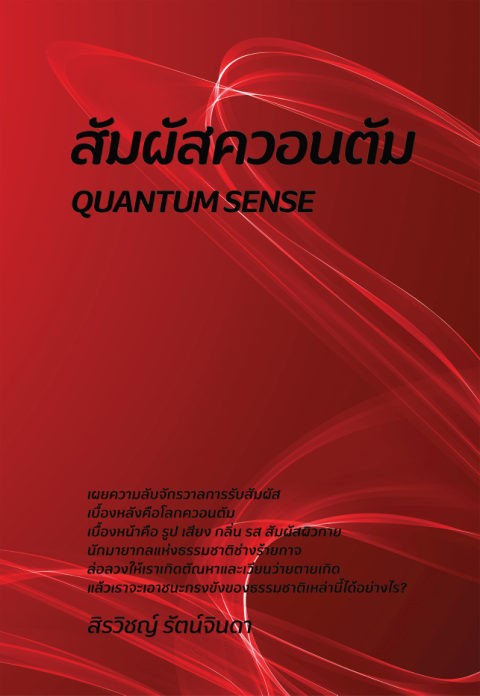

เปิด PDF ต้นฉบับเล่ม ๖ · คู่มือเดินทางแบบโต้ตอบ
สัมผัสควอนตัม
เล่มนี้ใช้แนวคิดลำดับแห่งโยงใย (Implicate Order) ของเดวิด โบห์ม มาช่วยมองว่าการเห็น การได้ยิน และการรับสัมผัสทุกชนิดที่เรานึกว่าเป็นของจริง แท้จริงเป็นเพียงสิ่งที่ขันธ์ ๕ ปรุงแต่งขึ้นมา เมื่อคลายความยึดติดในสัมผัสเหล่านี้ได้ หนังสือจึงค่อยพาไปสู่เรื่องวิญญาณและนิพพานตามพุทธพจน์ในช่วงท้ายเล่ม
แนวคิดหลักสามข้อของเล่มนี้
ลำดับโยงใย
จักรวาลไม่ได้แยกเป็นชิ้นส่วน แต่ห่อหุ้มกันอยู่ในลำดับที่ลึกกว่าสิ่งที่ตาเห็น แล้วค่อยเผยตัวออกมาเป็นภาพ เสียง และสัมผัส
ขันธ์ ๕
การเห็น ได้ยิน และรับสัมผัสทั้งหมด ล้วนเป็นกระบวนการปรุงแต่งของขันธ์ ๕ ไม่ใช่ตัวตนที่แท้จริงของสิ่งภายนอก
หลุดพ้น
นิพพาน
เมื่อเห็นว่าการรับสัมผัสเป็นเพียงมายา ตัณหาและอุปาทานที่ยึดติดกับสิ่งที่รับรู้จะค่อยคลายลง นำไปสู่ความหลุดพ้น
เส้นทาง 18 บท · อ่านตามลำดับหรือข้ามไปบทที่สนใจก็ได้
๑นักมายากลแห่งธรรมชาติเสียงของอาจารย์ที่ทำให้มีหนังสือชุดนี้ · โบห์มที่หนังสือไม่ได้เล่า · และไอน์สไตน์ที่ไม่ได้พูดอย่างนั้นอ่านได้
๒ห่อหุ้ม-เผยออก ของเดวิด โบห์มอุปกรณ์ที่มีอยู่จริง · เหตุผลที่หยดหมึกกลับมาได้ · และข้อจำกัดที่ทำให้อุปมาตรงกับธรรมะยิ่งขึ้นอ่านได้
๓ลำดับแห่งโยงใยกับทฤษฎีควอนตัมอนุภาคที่เป็นการสั่นของสนาม · โบห์มที่พาไปถึงเบลล์ · และความเชื่อมโยงที่ส่งข้อมูลไม่ได้อ่านได้
๔ลำดับแห่งโยงใยกับชีวิตต้นไม้ที่สร้างขึ้นจากอากาศ · มือที่ไม่เคยแตะโต๊ะ · และร่างกายที่แต่ละส่วนมีอายุไม่เท่ากันอ่านได้
๕ลำดับแห่งโยงใยกับวิถีจิตการรับรู้ที่มาเป็นช่วงๆ · จดหมายของเจ้าหญิงเอลิซาเบธ · และฮูมที่ไปถึงอนัตตาด้วยการนั่งคิดอ่านได้
๖ลำดับแห่งโยงใยกับเสียงเสียงที่ยังก้องอยู่สองถึงสี่วินาที · ทำนองที่แตกเป็นสองสายเมื่อเร่งจังหวะ · และเสียงที่สูงขึ้นไม่มีที่สิ้นสุดอ่านได้
๗ลำดับแห่งโยงใยกับภาพไฟสองดวงที่ไม่มีอะไรวิ่งอยู่ระหว่างกลาง · รูในสายตาที่คุณไม่เคยเห็น · และตาที่กระโดดสี่ครั้งต่อวินาทีอ่านได้
๘โฮโลแกรม (Hologram)ลายริ้วที่เก็บทิศทางของแสง · สามสิบปีที่ตามหาความจำแล้วไม่เจอ · และเด็กที่มีสมองซีกเดียวอ่านได้
๙ลำดับแห่งโยงใยกับวิญญาณขันธ์ว่างเปล่าที่ไม่ได้แปลว่าไม่มี · สามทฤษฎีที่สถานะไม่เท่ากัน · และการแวบขึ้นในใจที่วัดได้อ่านได้
๑๐โฮโลแกรมกับสัญญาขันธ์แอ่งน้ำที่แท้จริงคือภาพของท้องฟ้า · ความจำที่ประกอบขึ้นใหม่ทุกครั้ง · และการตรวจสอบง่ายๆ ด้วยอุปมาอีกสี่ข้ออ่านได้
๑๑ลำดับแห่งโยงใยกับเวทนาขันธ์ฟองที่แตกเพราะมันเป็นฟอง · ความชอบที่มาก่อนความคิดหนึ่งในสิบวินาที · และข้อต่อที่ฝึกได้ในชีวิตประจำวันอ่านได้
๑๒ลำดับแห่งโยงใยกับสังขารขันธ์และรูปขันธ์ต้นกล้วยที่ลำต้นเป็นแค่กาบใบ · เนินที่ดูชันขึ้นเมื่อเราเหนื่อย · และใบไม้ที่ไม่ได้เขียวอ่านได้
๑๓ชุดที่ประสานกัน (Ensemble)นาฬิกาที่ระเบิดนิวเคลียร์ทิ้งไว้บนอากาศ · เซลล์ที่แยกแล้วกลับมาเรียงตัวเอง · และสองชั้นที่ถูกเติมเข้ามาอ่านได้
๑๔เหตุแห่งความหลุดพ้นและวิญญาณที่ไปเกิดใหม่คำว่าเบื่อหน่ายที่อ่านผิดได้ง่าย · ไฟที่ถูกเรียกชื่อตามเชื้อ · และคลื่นที่ไม่มีอะไรเดินทางอ่านได้
๑๕ช่างสร้างเรือนของพระพุทธองค์กับรูปแบบ (Formal) ของอริสโตเติลคำตอบที่อยู่ในบรรทัดสุดท้ายของคาถาเอง · ยุคที่โลกคิดพร้อมกัน · และรังผึ้งที่ไม่มีผึ้งตัวไหนคำนวณอ่านได้
๑๖อาหารของวิญญาณ (1)สิ่งที่ถูกเลี้ยงไม่ใช่สิ่งที่ตั้งอยู่เอง · ใจที่ไม่ยอมเงียบเมื่อไม่มีอะไรเข้ามา · และลูกศรดอกที่สองอ่านได้
๑๗อาหารของวิญญาณ (2)ลำแสงที่มองไม่เห็นจนกว่าจะมีฝุ่น · ท้องฟ้าสีดำกลางวันแสกๆ · และรายการอุปมาที่ตอบคำถามของตัวเองอ่านได้
๑๘นิพพาน (พุทธพจน์ที่เกี่ยวข้อง)ปฐมฌานก็พอแล้ว · เข้าฌานเขียนคืออะไรกันแน่ · และแผนที่สี่ชั้นของทั้งเล่มอ่านได้
วิธีใช้คู่มือนี้
คำที่มีเส้นประสีทองข้างใต้ กดได้ทันที จะมีคำอธิบายภาษาคนธรรมดาขึ้นมาโดยไม่ต้องรอ · แต่ละบทมี "หน้าต่างสู่จักรวาล" สีน้ำเงินเข้มที่เลื่อนเล่นได้ เพราะเรื่องพวกนี้ต้องเห็นมันเคลื่อนไหวถึงจะเข้าใจ · สงสัยตรงไหน กดปุ่ม "ถามตรงนี้" มุมขวาล่าง ผู้ช่วยรู้เนื้อหาทั้งเล่มและจะบอกว่าเรื่องนั้นอยู่บทไหน
คำที่มีเส้นประสีทองข้างใต้ กดได้ทันที จะมีคำอธิบายภาษาคนธรรมดาขึ้นมาโดยไม่ต้องรอ · แต่ละบทมี "หน้าต่างสู่จักรวาล" สีน้ำเงินเข้มที่เลื่อนเล่นได้ เพราะเรื่องพวกนี้ต้องเห็นมันเคลื่อนไหวถึงจะเข้าใจ · สงสัยตรงไหน กดปุ่ม "ถามตรงนี้" มุมขวาล่าง ผู้ช่วยรู้เนื้อหาทั้งเล่มและจะบอกว่าเรื่องนั้นอยู่บทไหน